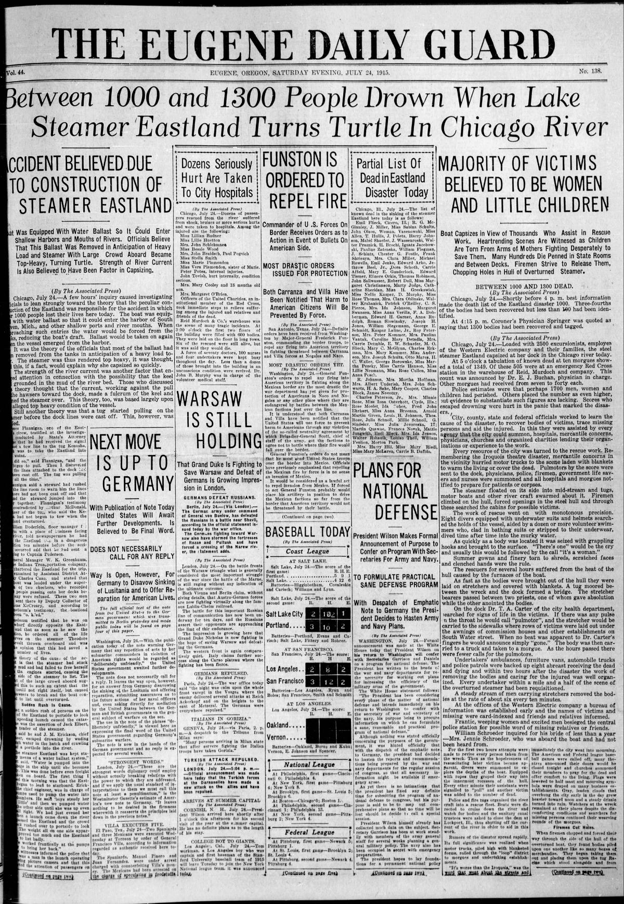
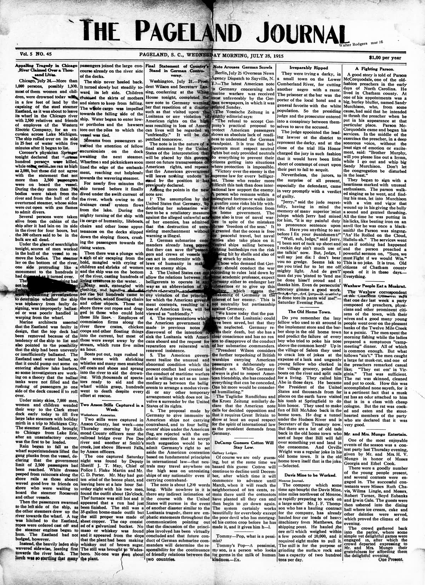
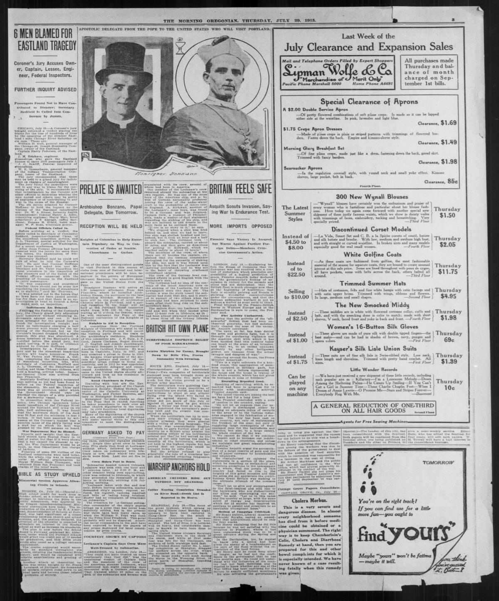
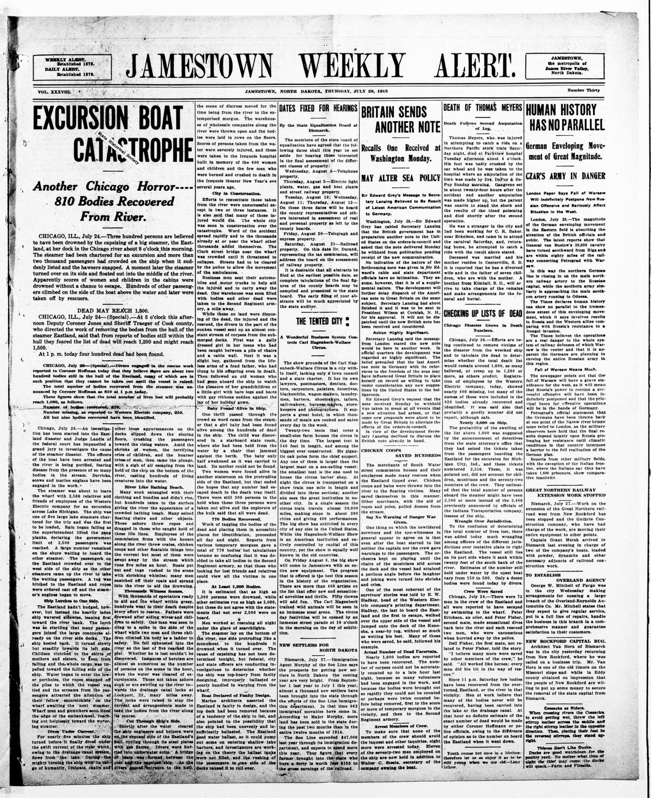

HN HN-397 · July 28, 1915 · Transportation & Maritime > Shipwrecks, Maritime Accidents & Losses > Sinkings, capsizings and foundering
Authentic images retrieved from Historic Oregon Newspapers (University of Oregon), South Carolina Historic Newspapers (University of South Carolina), Hoosier State Chronicles (Indiana State Library) and Library of Congress / Chronicling America. Article crops are located using the archive's own OCR word coordinates and rendered at native crop resolution; article clips are assembled from the archive's own article-block images; page scans are reduced-size access renditions. No images were generated, mocked, or retouched.




Not yet acquired. Queued for provider-specific acquisition testing (see source-acquisition manifest).
URL (preserved verbatim): https://newspapers.library.in.gov/?a=d&d=JCDC19150728.2.14
Saved research report: Historical_Newspaper_Event_Research_378-402_2026-10-23.md
Evidence note: A newspaper report means a historical publication made a claim; it does not establish that claim as fact. Contemporary reporting is separated from later scholarly context and our own assessment.